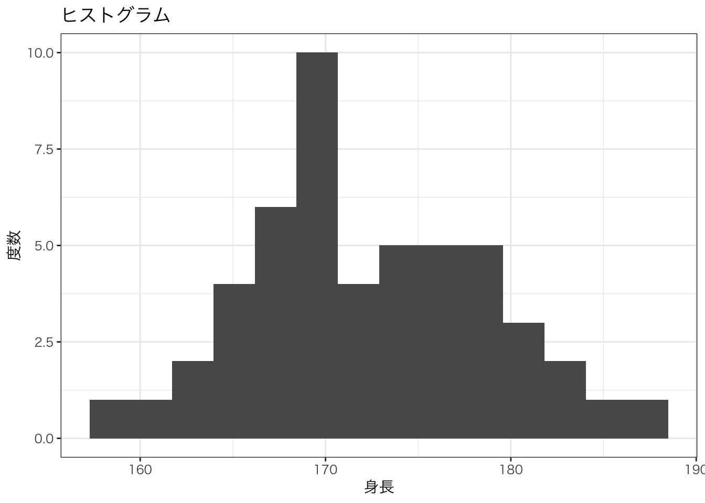
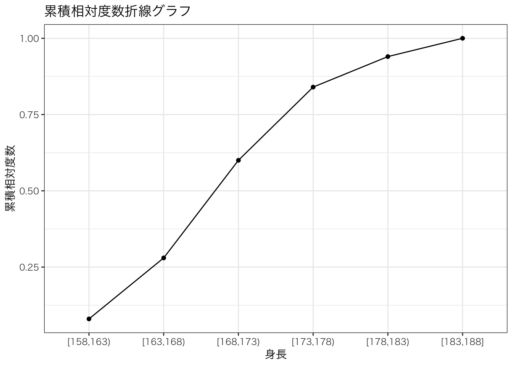

library(ggplot2)
theme_set( theme_bw(base_family = "HiraKakuProN-W3")) 度数分布表とヒストグラム
準備
プロジェクトの設定
使用するライブラリ: ggplot2
データの準備
# 男性の身長データ
set.seed(123)
# 男性の身長データ（平均172cm、標準偏差7cm）
male_height <- rnorm(50, mean = 172, sd = 7)
# データフレームに変換
df <- data.frame(PersonID = 1:50, Height = round(male_height, 1))男性の身長を意識して適当なデータを作成しました．
head(df) PersonID Height
1 1 168.1
2 2 170.4
3 3 182.9
4 4 172.5
5 5 172.9
6 6 184.0度数分布
データをいくつかの範囲（階級）に分けて，その範囲に属するデータの数（度数）をまとめたもの．データの全体的な傾向を視覚的に把握するのに役立つ．
度数分布表
度数分布表は，各階級に属するデータの数を表した表である．
N: データサイズの総数
n: 階級の個数
一般的に以下の項目を含む．
階級値
度数
相対度数
累積度数
累積相対度数
階級値 \(x_{n}\)
階級を代表する値であり階級の中央値をとる．
\[ x_{n} = \frac{a_{n-1} + a_{n}}{2} \]
代表的な階級数の求め方は後述する．
度数 \(f_{n}\)
階級に属するデータの個数
相対度数 \(p\)
全体に対し各度数が占める割合
\[ p = \frac{f_{n}}{N} \]
累積度数 \(F_{n}\)
その階級までの度数の総和
\[ F_{n} = f_{1} + f_{2} + ... + f_{n} \]
累積相対度数 \(P\)
全体に対し各累積度数が占める割合
\[ P = \frac{F_{n}}{N} \]
度数分布表の作り方
1. レンジ\(R\)と階級数\(n\)を求める
\[ R = Max - Min \]
\[ n = 1 + \log{N} \]
階級数の計算方法にはいくつかの方法がある．もっとも一般的に使われる方法は「スタージェスの公式」です．
\[ n = 1 + \frac{\log_{10}{N}}{\log_{10}{2}} = 1 + \log{N} \]
他には「鈴木の公式」などがあります．
\[ n = 1.7\sqrt[3]{N} \]
今回は「スタージェスの公式」を使用します．
# 最大値と最小値の取得
max_value <- max(df$Height)
min_value <- min(df$Height)
# 範囲の計算
r <- max_value - min_value
# データの個数を取得
n <- length(df$PersonID)
# スタージェスの公式で階級数を計算
k <- ceiling(1 + log2(n))階級と階級値を決める
# 階級幅の計算
class_width <- ceiling(r / k)
# 階級用の値を作成（最小値から階級幅ごとの数列を生成）
class_vec <- seq(from = min_value, to = max_value + class_width, by = class_width)
# 階級値の計算（right=FALSEだと左側の境界を含み、右側は含まない）
cut_data <- cut(df$Height, breaks = class_vec, right = FALSE, include.lowest = TRUE)度数を集計し，度数分布表を作成する
# 度数分布表を作成
freq_table <- table(cut_data)
freq_tablecut_data
[158,163) [163,168) [168,173) [173,178) [178,183) [183,188]
4 10 16 12 5 3 ここで作成した度数分布表は相対度数，累積度数，累積相対度数を含みません． それぞれについて後ほど計算します．
累積度数の計算
cumsum(freq_table)[158,163) [163,168) [168,173) [173,178) [178,183) [183,188]
4 14 30 42 47 50 相対度数の計算
# 相対度数の計算
relative_freq <- prop.table(freq_table)
relative_freqcut_data
[158,163) [163,168) [168,173) [173,178) [178,183) [183,188]
0.08 0.20 0.32 0.24 0.10 0.06 累積相対度数の計算
# 累積相対度数を計算
cum_relative_freq <- cumsum(relative_freq)
cum_relative_freq[158,163) [163,168) [168,173) [173,178) [178,183) [183,188]
0.08 0.28 0.60 0.84 0.94 1.00 ヒストグラム
# ヒストグラム
ggplot(df, mapping = aes(x = Height)) +
geom_histogram(bins = 14) +
labs(x = "身長", y = "度数", title = "ヒストグラム")
累積相対度数折線グラフ
# 累積相対度数折線
df_cum_relative_freq <- data.frame(
class = names(freq_table),
cum_relative_freq = cum_relative_freq
)
ggplot(df_cum_relative_freq, aes(x = class, y = cum_relative_freq, group = 1)) +
geom_line() +
geom_point() +
labs(x = "身長", y = "累積相対度数",
title = "累積相対度数折線グラフ")